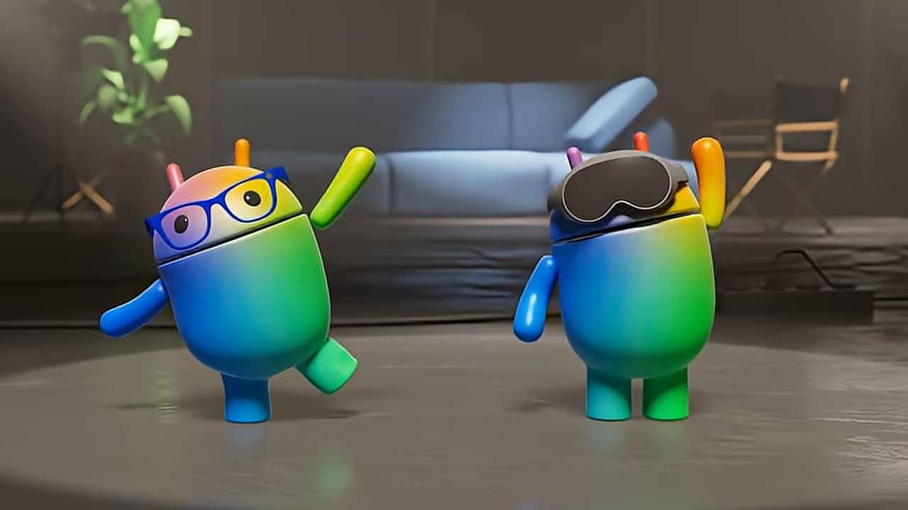

Interaction Design • Android XR
Interaction design on Android XR at Google

Role
Interaction Designer
Timeline
2025 - Present
Team
Design Manager x1
Lead Designer x2 (A11y)
Engineers
PM
Skills
Interaction Design
Prototyping
Stakeholder Management
Accessibility Design
Overview
Does this feel stable when someone actually wears the headset..?
That question guided most of my work over the past year on the Android XR team at Google. I worked on system-level features that needed to behave reliably across real hardware, real inputs, and real performance constraints—not just look good in mocks.

Outcomes
Value Delivered: I owned interaction and visual execution for a set of system-level features, taking them from early definition to pixel-perfect, production-ready designs that shipped. This meant specifying behavior in detail, reviewing builds on-device, and working closely with engineers to ensure the final implementation matched the intent..
THINGS I FIXED
Small inconsistencies break immersion fast...
Much of my time went into refining spacing, timing, depth, and feedback—how UI elements appear, persist, and respond in space across different hardware conditions. These small execution details made the difference between an experience that felt fragile and one that felt dependable.
The real test is when things go wrong...
I also designed interactions for edge cases like system stress or performance drops, focusing on keeping feedback clear and calm.

"If it works for accessibility, it works better for everyone "
I also contributed to accessibility execution across the features I worked on defining focus order, input behavior, and semantic clarity, and validating these decisions in production builds. Accessibility often surfaced interaction issues early, helping improve overall quality before release.
REFLECTION
If it ships clean, the design disappears.
By the time these features were released, the biggest lesson was that strong interaction design is often invisible. This year at Google shaped me into a more execution-driven designer—focused on precision, follow-through, and shipping experiences that feel solid the moment someone wears the device.
